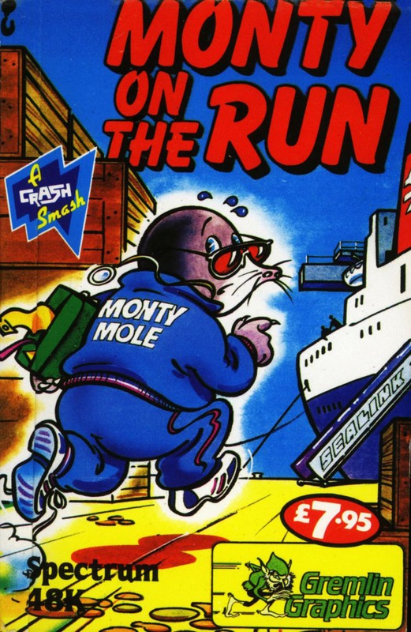
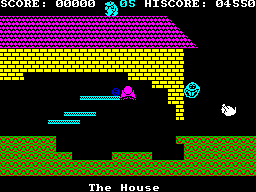
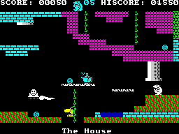

Monty on the Run


{kind=link}

| Publisher: | Gremlin Graphics |
| Price: | £6.95 |
| Year: | 1985 |
| Source: | CRASH, Issue 20 |

At last, the true successor to Wanted: Monty Mole, and Peter Harrap’s evil sense of games humour is back at work. Whatever was mean in the first game, is now ten times so in this saga of prison escape for the hero mole. One noticable difference between the two games is that after his exertions in the prison gymnasium, Monty is now a very fit mole indeed and does all his jumping by somersaulting.
Graphically, the follow up is quite similar and there are the familiar combinations of platforms, building blocks, ropes and ladders. The Gremlin crushers are back as well, but some of them have an ‘appalling’ sense of timing. Added features are the teleport devices and the lifts. There are several of teleporters that fire beams of changing colours, and you have to work out which colour is the safe one that lets you walk through untransported. Of course, you may want to be teleported somewhere else on occasion, but not all exit points are desirable or safe! The ‘safe’ colour is different for each teleporter, and to make life worse, some of them change their colour after use. The lifts appear to offer a quick and useful means of going up or down, but one or two of them should be watched a bit closely because the cables aren’t all that sound.

The basic object is to get Monty on board a boat sailing for France and away from the long arm of the British Law. Careless as people are, there are sovereigns lying around all over the place to be collected, but Monty also needs a lot of equipment to make good his escape. Here comes the adventure element; some of the objects are useful, others are a waste of time, and some are deadly if touched, although a number of the nastier items become less so if something else relevant has been collected earlier. This of course means having to retrace your precariously achieved steps a few times. In addition to the collectible items in the game itself, before you start the game, you may choose up to five of 21 objects which you think might help you in your quest — of course, you may choose badly, but you’ll never know until it’s too late.... The game starts off outside a house, but the ship isn’t too far away, and it won’t be sailing until all the correct items have been collected and safely stowed away at the bow and the engines prepared for sailing.
Monty on the Run is vastly bigger and more complex than Wanted: Monty Mole and contains many more inter-related elements which make it both a platform jumping game and one of skilled timing with adventure overtones. Also, it is only being released in October, so this is a very early review — but one that has been fully made from a completed production copy.
CRITICISM

“What a brilliant game. I have never played Monty Mole and I am beginning to realise what I missed and why it was so popular. There are hundreds of screens gradually getting more difficult with progression. Every screen is as detailed as the last. There is a good idea on the beginning where Monty (you) can choose 5 tools to help him in the task. Choosing the wrong tools can be fatal. This idea, for me, gave the game the edge over a lot of other platform games. The High Score hall of fame has an ingenious idea of young Monty turning a handle to scroll the scores. All these little features go to form a platform game well worth taking a look at. Your money won’t be wasted, and you won’t be disappointed.”
“Wanted: Monty Mole was deservedly popular, and this new game offers a great deal more, much much more in fact. Monty’s somersaulting is graphically excellent, very convincing as well as adding another skill element to the game, for his tumbling figure often makes it hard to squeeze between variously weaving nasties. In fact Monty on the Run is all about timing, and some of the situations take a lot of practice to get right. This is one of the very best of multi-screen platform games, with loads of screens, many different situations, gags and double crosses. I thought the lifts were marvellous, and the effect when Monty bites the dust under a crusher is quite spectacular. A map will be tough to get together and one is probably essential to complete the game, especially when it comes to remembering all those little items you didn’t collect because there appeared to be no way of reaching them earlier. Excellent graphics, good sound, tough gameplay — in fact a great game.”
“Monty on the Run is similar to the original Monty game. This style is in my opinion better than some of the other Gremlin productions. I found Monty OTR very playable and addictive. The graphics were nice and smooth — somersaulting instead of just jumping seems to be the ‘in’ thing for this type of game. Monty does this with great ability.”
COMMENTS
| Control keys: | Q Left, W right, Y-P up, H-ENTER Down, B-SPACE Jump/Fire |
| Joystick: | Sinclair, Kempston, Cursor |
| Keyboard play: | Very responsive, pixel positioning |
| Use of colour: | Excellent |
| Graphics: | Well detailed and animated, varied, fast and smooth |
| Sound: | Good |
| Skill levels: | 1, and pretty hard! |
| Lives: | 6 |
| General rating: | A great improvement over last year’s Best platform Game. |
| Use of computer: | 89% |
| Graphics: | 91% |
| Playability: | 93% |
| Getting started: | 90% |
| Addictive qualities: | 95% |
| Value for money: | 95% |
| Overall: | 94% |